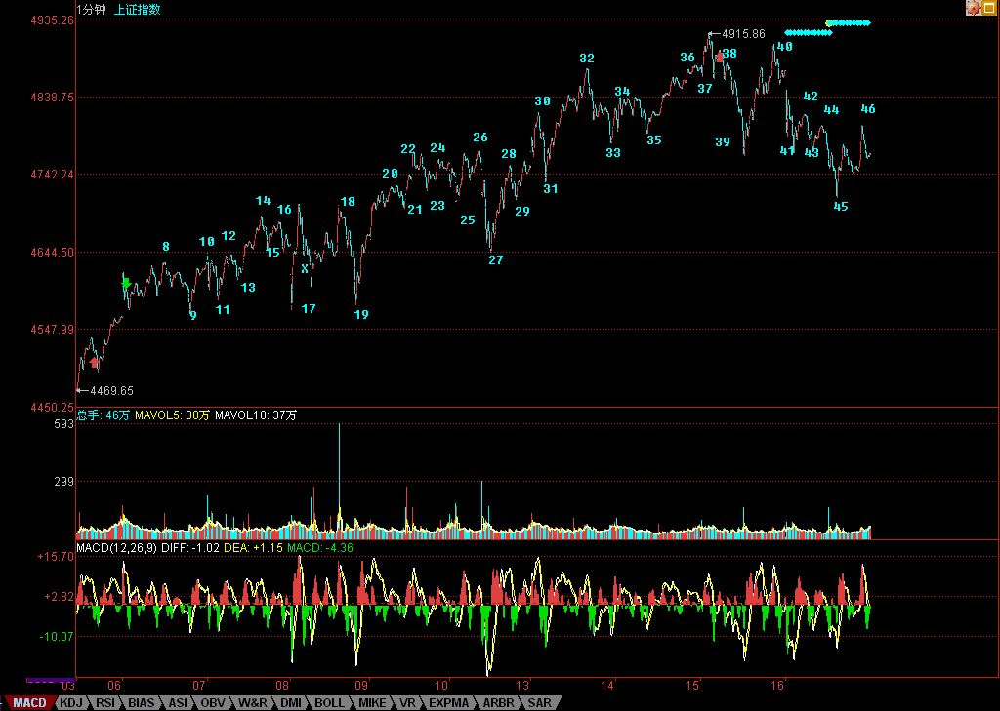

“全球化社会里，没有哪个股市是可以与世隔绝的。”是在本周一的公募基金经理“快男”发展模式的不可持续
上写的，主要是针对八月股市的分析。现在的问题，已经很明确了，还是该文章里说的，要注意月线上影的杀伤力。
当然，没必要预测这个问题，而且本ID从来都认为，美国的事情对中国的影响从来都是战略性的，中美游戏，只看最后结果，中间都是游戏而已。就像原来的蒋委员长，最终只得了个蒋匪而看海水之蓝终老，谁能把美国搞成美匪，显然更牛于将蒋委员长搞成蒋匪。
美国暴风雨，全世界陪着挨冻，但至少今天的中国散户，很多都没这种感觉。为什么？因为二、三线股被热点蔓延了。本ID从上周起，反复用到的就是蔓延这个词，这确实是一个度过风雨时节的好办法，搞工行的被美国搞了，现正痛苦中，那些到香港QDII的，终于知道全世界的乌鸦一般黑了。而这里的二、三线股的火，能否温暖这风雨之夜，就看明天和周一了。
全球化，没有市场可与世隔绝，但可以创造与世隔绝的板块，二、三线股，本来就是给点烛光都能灿烂，关键是，如果烛光都不能给，有点光就把投机大帽子盖上，那就瞎闹了。那些二、三线股一动就忽悠投机的，脑子里肯定水太多。当然，现在不比上半年，这二、三线股之火能否燎原，还真不好说，走着瞧吧。
大盘走势上，16这点如果跌破，那么，形成30分钟中枢震荡就是唯一选择了，换言之，4700点如果不破，还有在目前位置形成新的5分钟震荡可能，也就是原来的5分钟上涨走势依然能维持，因此，短线调整级别的大小，就看这4700点。
这，关键还是要看美国这病人还要鬼哭狼嚎几天了，说实在，本ID是宁愿中国这边30分钟甚至日线震荡，也希望看到美国哭个368天算了，为阿富汗、伊拉克死难的人，美国人多些破产，难道不应该？
今天心情大好，看到美国暴跌就开心，虽然会让汉奸不爽，但汉奸不爽的事情，本ID最愿意干。
今天回答问题到5点，因为开心。
注意，下图中的46并不百分百确定，因为如果明天大幅度高开，那就要改变了，这只是大致标记上。
